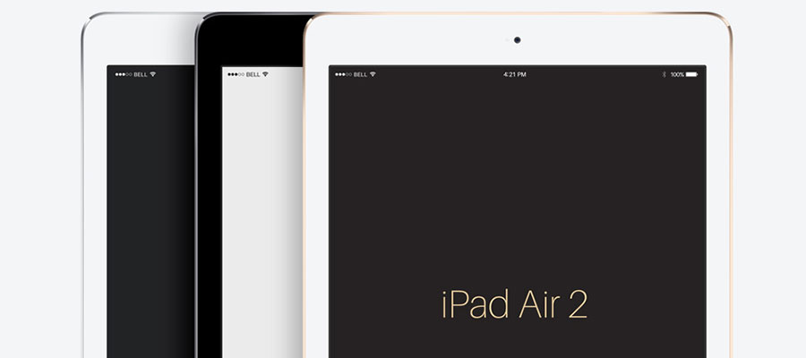
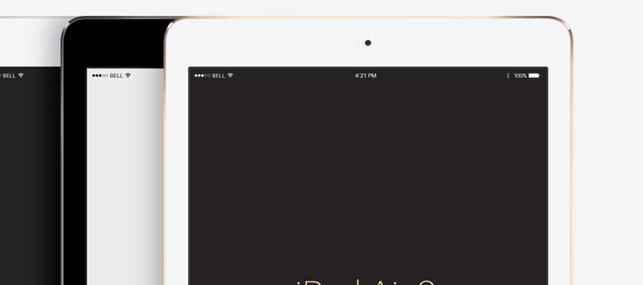
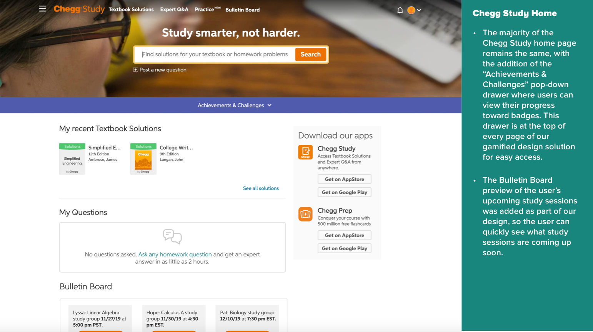

<!DOCTYPE html>
<html>
</html>
<head>
  <meta charset="utf-8">
  <meta http-equiv="X-UA-Compatible" content="IE=edge">
  <title>Chegg Gamification | Project 2</title>
  <meta name="description" content="">
  <meta name="viewport" content="width=device-width, initial-scale=1">
  <meta name="robots" content="all,follow">
  <!-- Bootstrap CSS-->
  <link rel="stylesheet" href="vendor/bootstrap/css/bootstrap.min.css">
  <!-- Font Awesome CSS-->
  <link rel="stylesheet" href="vendor/font-awesome/css/font-awesome.min.css">
  <!-- Google fonts - Roboto-->
  <link rel="stylesheet" href="https://fonts.googleapis.com/css?family=Roboto:400,300,700,400italic">
  <!-- owl carousel-->
  <link rel="stylesheet" href="vendor/owl.carousel/assets/owl.carousel.css">
  <link rel="stylesheet" href="vendor/owl.carousel/assets/owl.theme.default.css">
  <!-- theme stylesheet-->
  <link rel="stylesheet" href="css/style.turquoise.css" id="theme-stylesheet">
  <!-- Custom stylesheet - for your changes-->
  <link rel="stylesheet" href="css/custom.css">
  <!-- Favicon-->
  <!-- <link rel="shortcut icon" href="img/favicon.png"> -->
  <link rel="apple-touch-icon" sizes="180x180" href="favicon/apple-touch-icon.png">
  <link rel="icon" type="image/png" sizes="32x32" href="favicon/favicon-32x32.png">
  <link rel="icon" type="image/png" sizes="16x16" href="favicon/favicon-16x16.png">
  <link rel="manifest" href="/site.webmanifest">
  <!-- Tweaks for older IEs--><!--[if lt IE 9]>
    <script src="https://oss.maxcdn.com/html5shiv/3.7.3/html5shiv.min.js"></script>
    <script src="https://oss.maxcdn.com/respond/1.4.2/respond.min.js"></script><![endif]-->
</head>
<body>
  <!--to keep Firefox from showing body text before head is loaded- FOUT-->
  <script>0</script>
  <div id="all">
    <div class="container-fluid">
      <div class="row row-offcanvas row-offcanvas-left"> 
        <!--   *** SIDEBAR ***-->
        <div id="sidebar" class="col-md-4 col-lg-3 sidebar-offcanvas">
          <div class="sidebar-content">
            <h1 class="sidebar-heading"> <a href="index.html">Alexandra Huang</a></h1>
            <p class="sidebar-p">I'm a product designer/UX researcher and recent graduate with a master's in Human Factors and Ergonomics.</p>
            <p class="sidebar-p">Currently based in the San Francisco Bay Area.</p>
            <ul class="sidebar-menu">
                <!-- Link-->
                <li class="sidebar-item"><a href="index.html" class="sidebar-link active">Portfolio</a></li>
                <!-- Link-->
                <li class="sidebar-item"><a href="about.html" class="sidebar-link">About</a></li>
                <!-- Link-->
                <li class="sidebar-item"><a href="contact.html" class="sidebar-link">Get in touch</a></li>
            </ul>
            <p class="social"><a href="mailto:alexandra[dot]huang[at]gmail[dot]com" data-animate-hover="pulse" class="email"><i class="fa fa-envelope"></i></a><a href="https://www.linkedin.com/in/alexandrayhuang" data-animate-hover="pulse" class="external linkedin"><i class="fa fa-linkedin"></i></a><a href="https://github.com/alexandra-huang" data-animate-hover="pulse" class="external github"><i class="fa fa-github"></i></a></p>
            <div class="copyright text-center text-md-left">
              <p class="credit">Copyright &copy; 2021 Alexandra Huang | Template by <a href="http://bootstrapious.com/portfolio-themes" class="external">Bootstrapious.com</a></p>
              <!-- Please do not remove the backlink to us, unless you support the development at http://bootstrapious.com/donate. It is part of the license conditions. Thanks for understanding :)        -->
            </div>
          </div>
        </div>
        <!--   *** SIDEBAR END ***  -->
        <!--   *** DETAIL ***-->
        <div class="col-md-8 col-lg-9 content-column white-background">
          <div class="small-navbar d-flex d-md-none">
            <button type="button" data-toggle="offcanvas" class="btn btn-outline-primary"> <i class="fa fa-align-left mr-2"></i>Menu</button>
            <h1 class="small-navbar-heading"> <a href="index.html">Alexandra Huang</a></h1>
          </div>
          <div class="row">
            <div class="col-xl-10">
              <div class="content-column-content">
                <h1>Chegg Gamification</h1>
                <p class="lead"><strong>Designed and prototyped</strong> a solution to meet Chegg's business goals to increase user engagement with the Chegg product suite through gamification, while also facilitating online groupwork and collaboration amongst Chegg users, as part of the Interaction Design II course at San Jose State University.</strong></p>
                <!-- <div id="main-slider" class="owl-carousel owl-theme">
                  <div class="item"><a href=""></a></div>
                  <div class="item"><a href=""></a></div>
                  <div class="item"><a href=""></a></div>
                </div> -->
                <!-- /#main-slider-->

                
                <br><br><br>
                <p class="proj-body link"><a href="chegg-prototype/home.html">Link to full clickable Axure prototype (desktop)</a></p>

                <blockquote class="blockquote">
                  <p class="mb-0"><strong>Keywords:</strong> UX design, interaction design, gamification, game elements, iteration, prototyping, Axure</p>
                  <br>
                  <p class="mb-0"><strong>Team:</strong> 2 designers (<strong>me</strong> and one other student)</p>
                  <br>
                  <p class="mb-0"><strong>When:</strong> Nov. - Dec. 2019</p>
                    <!-- <ul>
                      <li>1 week for brainstorming and sketching</li> 
                      <li>2 weeks to design, iterate, and prototype</li> 
                      <li>1 week for the redesign’s usability testing and improvement</li>
                    </ul>
 -->                </blockquote>
                <hr>
                <h3>Background</h3>
                <p>Chegg is an education technology company with a learning platform in the form of the Chegg.com website, offering services that help students with studying and succeeding in school. They offer a product suite including Chegg Study, Books, Writing, Flashcards, Math Solver, and more. <strong>Their target users are students, with a focus on college students in this project</strong>. They partnered with our Interaction Design II course at San Jose State University; we were tasked with designing and prototyping a solution to meet their business goals, since they served as our client for the project.</p>
                <hr>
                <!--User and Business Problems-->
                <h3>Problems and Opportunities</h3>
                <p class="proj-body"><strong>User Goals and Characteristics:</strong> </p>
                <ul class="proj-body-list">
                  <li>Want to be able to use Chegg to help them get the help they need on their homework and studying.</li> 
                  <li>Have different busy schedules, with more and more college students being online students without the same sense of community as there would be online.</li> 
                  <li>"Value efficiency and low cost while seeking academic success" (from Chegg).</li> 
                </ul>
                <p class="proj-body"><strong>Business Goals:</strong></p>
                <ul class="proj-body-list">
                  <li>Get users to <strong>use at least three Chegg products</strong> from their product suite, since these "power users" are much more likely to subscribe for longer periods of time than those who only use one.</li> 
                  <li><strong>Encourage interaction and group studying</strong> and learning among students, while fitting naturally into their usual workflow, to help provide community and a sense of belonging for often non-traditional students (e.g. online, working while going to school, etc.).</li> 
                </ul>
                <p>We focused on these goals in our design, to both satisfy the needs of the client as well as to design for the students who would be using it.</p>
                
                <hr>
                <h3>Design Process</h3>
                
                <!--Heuristic Eval-->
                <h4>Heuristic Evaluation</h4>
                <p class="proj-body">To familiarize ourselves with the Chegg website and products, we started with a heuristic evaluation of the site, evaluating how the existing Chegg site performs against <strong>Nielsen's 10 usability heuristics</strong>. </p>
                <p class="proj-body">Some of the main issues we found were:</p>
                <ul class="proj-body-list">
                  <li>A <strong>lack of clarity in visibility of system status</strong> to keep users informed via ample feedback, such as in the profile payment information form, where input fields do not indicate progress unless an invalid entry has occurred.</li> 
                </ul>

                
                <br>

                <ul class="proj-body-list">
                  <li><strong>Suboptimal user control and freedom</strong> either given to the user or clearly indicated. How does a user know what will happen when the question is posted? Will it be available publicly or show up in a private message? Prior to saving the question in step 1 (before the “Edit” button shows up), it is unclear if the question can be changed after moving on to the next step. </li> 
                  <li><strong>Flexibility and efficiency of use are lacking</strong> in that users cannot optimize their use of the site with frequent actions on or shortcuts that could be added to the home page when they are signed in. </li> 
                </ul>
                <br>
                <!--Conceptual Model-->
                <h4>Conceptual Model</h4>
                <p class="proj-body">We then developed a conceptual model to factor in what the <strong>user's mental model</strong> looks like as they interact with Chegg. This approach of building out the existing conceptual grammar ensures that our design solution does not leave anything out and flows with the user's understanding of the site.</p>
                <h5>Object-Action Matrix</h5>
                <p class="proj-body">As part of the conceptual model, we created an object-action matrix, <strong>treating each of the products in the Chegg product suite as an object</strong>, and identifying the primary actions that can be performed with each object.</p>
                
                <p class="proj-body caption"><em>The red "X"s indicate the object-action pairs we chose to focus our design on to fulfill Chegg's business goal of getting users to use at least three Chegg products.</em></p>

                <!--Prioritization Matrix-->
                <h5>Prioritization Matrix</h5>
                <p class="proj-body">Then, we sorted the object-action pairs based on priority, with higher priority actions being those that are used by many people frequently, and lower priority items being those that few people rarely use. Financial object-action pairs relevant to the business are also considered, so that we can see which actions should be focused on that are useful to the client.</p>
                
                <p class="proj-body caption"><em>Object-action pairs in red are the ones we chose to focus on for our gamification design.</em></p>
                <br>
                
                <!--Competitive Analysis-->
                <h4>Competitive Analysis and Brainstorming</h4>
                <p class="proj-body">Looking at competitors in the gaming space as well as others in the groupwork and online learning space was helpful in generating ideas for this gamified system. We drew inspiration from existing apps and learning platforms such as Duolingo to build the system of levels and badges, and we looked at collaborative tools such as Google Docs. These are a couple of sketches for preliminary solutions:</p>

                <br>
                <!--my sketches - clickable image-->
                <a href="#imgC">
                  
                </a>
                <!-- lightbox container hidden with CSS -->
                <a href="#_" class="lightbox" id="imgC">
                  
                </a>

                <p class="proj-body caption"><em>Sketch 1 (my sketches)</em></p>

                
                <p class="proj-body caption"><em>Sketch 2 (my partner's sketch)</em></p>
                
                <br>
                <!--Designing and Prototyping-->
                <h4>Designing and Prototyping</h4>
                <p class="proj-body">In working on the design, to maximize efficiency, my design partner and I started off by discussing ideas and possible solutions, with a single-page approach to incorporating multiple Chegg products. We decided to focus on the <strong>textbook solutions aspect of Chegg Study</strong> and, as shown in the above sketches, opted for a <strong>groupwork-based approach</strong> where Chegg users have a <strong>collaborative workspace</strong> while viewing the provided textbook problem solutions. </p>
                <p class="proj-body">As we found while looking at Google Docs and other shared workspaces, we decided to include a <strong>group chat</strong> functionality on the side, so that students can discuss material as they study, in addition to being able to <strong>annotate the solutions</strong> as well by highlighting, commenting, and adding questions on top of the displayed solution.</p>

                <p class="proj-body">We built off of the existing Chegg website, screenshotting elements of the site to add in new elements to showcase how our design solution would fit in to the existing site. The screens I primarily designed and worked on are shown and discussed below.</p>

                <!--  -->
                <!-- thumbnail image wrapped in a link -->
                <!-- <a href="#img2">
                  
                </a> -->

                <!-- lightbox container hidden with CSS -->
                <!-- <a href="#_" class="lightbox" id="img2">
                  
                </a> -->
                

                <div id="main-slider" class="owl-carousel owl-theme">
                  <div class="item"></div>
                  <div class="item"></div>
                  <div class="item"></div>
                  <div class="item"></div>
                </div>
                <!-- /#main-slider-->
                <p class="proj-body link"><a href="chegg-prototype/home.html">Link to full clickable Axure prototype (desktop)</a></p>

                <p class="proj-body">I designed and prototyped the Chegg Study home page, the Individual Study page, the Live Group Study Session page, and the Bulletin Board pages, while my partner did the Badge Book page and "Achievements & Challenges" drawer. We devised the following game mechanics, rules, and engagement loop for our gamified design of Chegg Study.</p>

                <!--GAME MECHANICS & RULES & ENGAGEMENT LOOP-->
                <p class="proj-body"><strong>Game Mechanics</strong> (bolded ones were our primary focus):</p>
                <ul class="proj-body-list">
                  <li><strong>Achievement</strong> (points, badges, skill mastery)</li> 
                  <li><strong>Feedback</strong> (progress indicators)</li> 
                  <li><strong>Connection</strong> (community, knowledge sharing)</li> 
                  <li>Reciprocity (through user-generated content: e.g. for the group chat and study buddy challenge, encouraging users to participate and mutually contribute to study sessions)</li>
                  <li>Recognition (LinkedIn sharing)</li>
                  <li>Urgency (accelerators where users can earn more points after studying for 30 minutes, also completing weekly challenges to earn a mystery box) </li>
                </ul>
                
                <p class="proj-body"><strong>Gamification Rules</strong>:</p>
                <ul class="proj-body-list">
                  <li>Two types of badges: personality and subject badges</li> 
                  <li><strong>Point and level system</strong>: 1 point = 1 comment in group chat (and everyone else comments once too), or 1 step of the solution reviewed, or 1 Chegg product (Math Solver, Writing, or Flashcards) used simultaneously with Chegg Study</li> 
                  <li>Users earn a new badge each time they level up.</li> 
                  <li>No leaderboard because we wanted to focus on <strong>intrinsic motivators</strong> of mastery, learning, and belonging, instead of extrinsic ones such as status and praise</li>
                  <li>Progress indicators for each badge type, shown in the global "Achievements & challenges" drawer</li>
                  <li>Weekly challenges to increase productivity</li>
                </ul>

                <p class="proj-body"><strong>Engagement Loop</strong>:</p>
                <ul class="proj-body-list">
                  <li><strong>Repetitive task scenario</strong> of studying using the step-by-step textbook solutions in Chegg Study</li> 
                  <li>Users participate and study, which earns them points, which earns them a mystery box that may come with more points or a free study question, <strong>motivating them to continue using Chegg Study</strong>.</li> 
                </ul>

                <hr>
                <h3>Takeaways</h3>
                <p class="proj-body"><strong>Things I learned</strong> from this project:</p>
                <ul class="proj-body-list">
                  <li>Gamification--adding <strong>reward elements</strong> to motivate people to be productive--can be an effective tool, but is tricky to implement well. It's helpful to narrow the focus of the design down to <strong>a few game mechanics.</strong></li> 
                  <li>Breaking down the reward elements and understanding the user and their <strong>motivations</strong> is necessary to figure out how to best motivate the user to continue the task (in this case, studying with Chegg), hence the <strong>engagement loop</strong> we came up with.</li>
                  <li>Having an existing <strong>UI design toolkit</strong> to use saves a lot of time, since you don't need to be spending a lot of time choosing colors and font sizes for different elements.</li> 
                </ul>


                <!-- Previous and Next buttons -->
                <nav aria-label="Portfolio navigation">
                  <ul class="pagination justify-content-center">
                    <li class="page-item"><a class="page-link" href="project1-sprint.html">Previous</a></li>
                    <li class="page-item"><a class="page-link" href="project3-acme.html">Next</a></li>
                  </ul>
                </nav>
                <!-- Previous and Next buttons end-->
              </div>
            </div>
          </div>
        </div>
      </div>
    </div>
  </div>
  <!-- JavaScript files-->
  <script src="vendor/jquery/jquery.min.js"></script>
  <script src="vendor/popper.js/umd/popper.min.js"> </script>
  <script src="vendor/bootstrap/js/bootstrap.min.js"></script>
  <script src="vendor/jquery.cookie/jquery.cookie.js"> </script>
  <script src="vendor/owl.carousel/owl.carousel.js"></script>
  <script src="vendor/masonry-layout/masonry.pkgd.min.js"></script>
  <script src="js/front.js"></script>
</body>